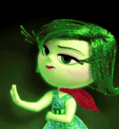

Comprendiendo el Asco
El asco es una emoción primaria y universal esencial para nuestra supervivencia. Se manifiesta como una reacción visceral de rechazo frente a estímulos que nuestro cerebro identifica como peligrosos, contaminados o dañinos para nuestra salud. Esta emoción está profundamente ligada a nuestros sentidos y actúa como un mecanismo de defensa indispensable para evitar enfermedades y mantener la integridad física y moral.
Dimensiones del Asco en la Escuela
- Asco Físico/Biológico: Reacción ante olores desagradables, suciedad o comida en mal estado. Nos protege de infecciones.
- Asco Social: Rechazo a comportamientos que violan normas básicas de convivencia o higiene del entorno escolar.
- Asco Moral: Respuesta ante injusticias, crueldad, acoso escolar (bullying) o corrupción. Nos impulsa a rechazar lo que consideramos incorrecto.
Reacciones y Neurobiología
El asco se procesa en la Ínsula cerebral, activando respuestas inmediatas:
- Físicas: Náuseas, arrugar la nariz, escalofríos, pérdida de apetito y alejamiento rápido del estímulo.
- Emocionales: Rechazo intenso, incomodidad y miedo a la contaminación.
Asco frente al Odio
Es vital diferenciar: El Asco es una reacción de rechazo inmediata y corta que nos aleja del peligro. El Odio es un sentimiento profundo y duradero de resentimiento que busca causar daño. Evitar esta transición es clave para una convivencia sana.
Gestión y Convivencia
Aunque el asco nos protege, un "asco social" mal gestionado puede derivar en discriminación. Debemos ser críticos y distinguir entre peligro real y prejuicios culturales. Asimismo, el asco moral debe canalizarse positivamente: si sentimos rechazo ante una injusticia escolar, debemos usar esa energía para denunciar o apoyar a quien lo necesita, evitando la exclusión.
